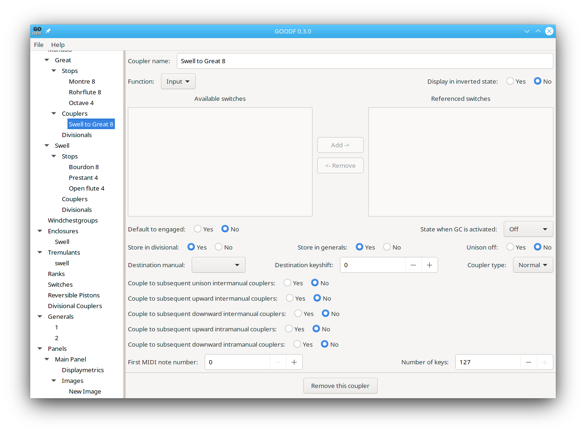

Couplers are used to allow a note played on on manual to play at the same pitch on another manual, or at a pitch an octave higher or lower on the same manual (intramanual) or other manuals (intermanual), or to allow the normal pitch not to be played on the same manual (Unison off.) This is configured by the coupler window. Couplers can be controlled by Switches, generals, divisionals, and GC. For more information on those parameters, see Stops.

UnisonOff (Boolean, required) If true, this coupler decouples the manual from the stops (turn it into a floating manual).
Destination Manual The manual to which the coupled key presses are sent.
Destination Keyshift (integer -24 - 24, required if not a unison off coupler) specifies the keyboard shift between source and destination manual in terms of absolute MIDI note numbers.
Couple To Subsequent Unison Intermanual Couplers (Boolean, required if not a unison off/melody/bass coupler) Triggers further inter-manual coupler with a destination key shift of zero.
Couple To Subsequent Upward Intermanual Couplers (Boolean, required if not a unison off/melody/bass coupler) Triggers further inter-manual coupler with a destination key shift greater than zero.
Couple To Subsequent Downward Intermanual Couplers (Boolean, required if not a unison off/melody/bass coupler) Triggers further inter-manual coupler with a destination key shift less than zero.
Couple To Subsequent Upward Intramanual Couplers (Boolean, required if not a unison off/melody/bass coupler) Triggers further intramanual coupler with a destination key shift greater than zero.
Couple To Subsequent Downward Intramanual Couplers (Boolean, required if not a unison off/melody/bass coupler) Triggers further intramanual coupler with a destination key shift less than zero.
Coupler Type (enumeration, default: Normal) Type of the coupler: Normal, Bass or Melody. Bass couples only the lowest note being currently platy on the manual; Melody couples only the highest note.
First MIDI Note Number (integer 0-127, default: 0) first MIDI note number to forward.
Number Of Keys (integer 0-127, default: 0) number of keys to forward starting with FirstMIDINoteNumber.